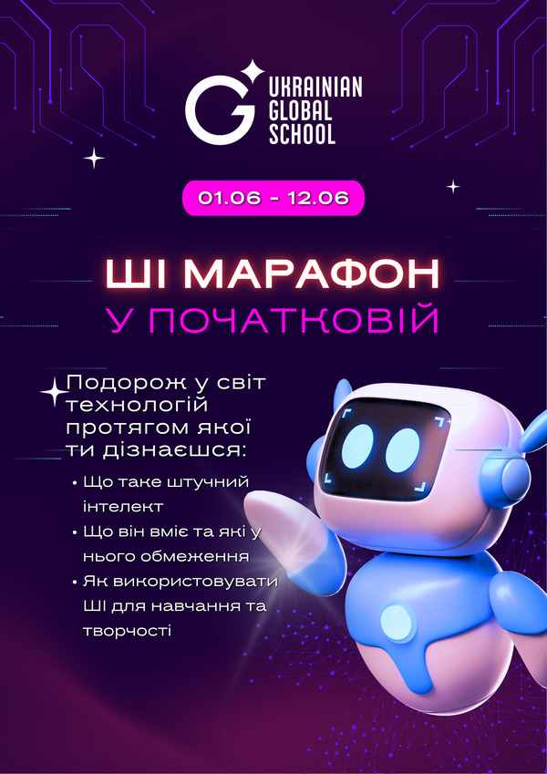
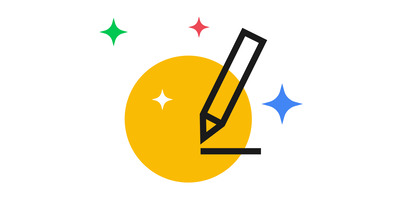
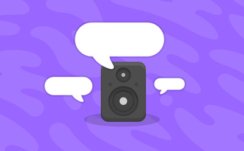
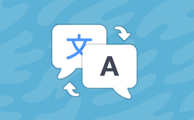
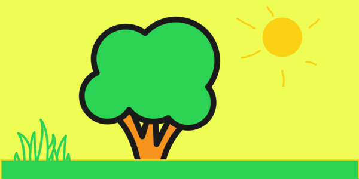
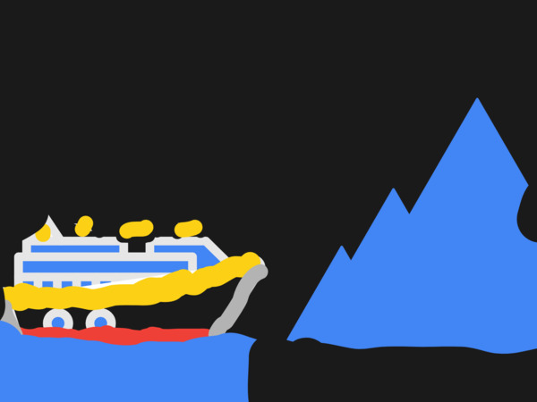
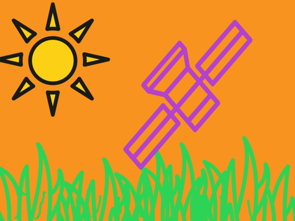

Протягом двох тижнів учні 1–4 класів досліджували, як працює штучний інтелект:
малювали з AutoDraw, оживляли власних персонажів, програмували у Scratch,
тренували моделі, створювали ігри, квізи й навчальні проєкти.
Головна ідея марафону — показати ШІ не як «магію», а як інструмент, яким людина
має вміти користуватися відповідально, критично й творчо.

Постер марафону, що висів у холі школи
Коротко про марафон
4
паралелі початкової школи
12
днів практичної роботи
10+
цифрових і ШІ-інструментів
50+
учнівських робіт і демонстрацій
2
опитування: до та після марафону
Цілі марафону
Ми прагнули показати штучний інтелект не як «магію», а як інструмент, який людина створює
і яким керує. Головне — формувати відповідальне та усвідомлене ставлення до технологій
з перших років навчання.
Зрозуміти, що таке ШІ
Пояснити простими словами, що таке штучний інтелект, де ми зустрічаємо його щодня і як він «навчається».
Від споживача до творця
Дати дітям спробувати себе в ролі творців: натренувати власну модель, зібрати проєкт, скласти запит.
Безпека та етика
Розвивати критичне мислення: штучний інтелект може помилятися, тож його відповіді треба перевіряти.
ШІ на різних уроках
Показати штучний інтелект не лише на інформатиці, а й на читанні, ЯДС, математиці та інших предметах.
Мій підхід
Головна мета — не хайп навколо новин і нових моделей, а фундамент: щоб діти
справді розуміли технології. Майже на кожному уроці ми пробували, порівнювали,
обговорювали й експериментували власноруч — знайомилися з ШІ на практиці, без
перевантаження термінами.
Для мене цей марафон — теж експеримент: як розповісти дітям про штучний інтелект
так, щоб і зацікавити, і вберегти.
Артем Кисляков, автор марафону
Ресурси за класами
Усі використані сервіси безкоштовні та працюють у браузері. Нижче — головні інструменти
кожної паралелі та як ми їх використовували.
Важливо про генеративні сервіси. ChatGPT та подібні інструменти
використовувалися лише в демонстраційному форматі під керівництвом учителя — без
дитячих акаунтів і без введення персональних даних.
1
1-ші класи
Перше знайомство: малюємо й оживляємо персонажів

AutoDraw
autodraw.com
Допомагав покращувати малюнки: дитина малює простий ескіз, а штучний інтелект
розпізнає задум і пропонує охайні готові зображення на заміну.
Створювали анімації з власних малюнків: діти малювали своїх персонажів, ми
завантажували їх у програму й обирали тип руху — а штучний інтелект оживляв
намальовану фігуру.
Перші програми у Scratch і знайомство з машинним навчанням


Scratch — Text to Speech & Translate
scratch.mit.edu
За допомогою розширень «Синтез мовлення» (Text to Speech) і «Перекладач» (Translate)
діти створювали програми з персональним асистентом-перекладачем, який перекладає
й озвучує текст різними мовами.
Знайомилися з машинним навчанням: діти навчали модель відрізняти рибу від сміття,
щоб «очистити» океан. Так вони наочно побачили, що ШІ навчається на прикладах
і що якість його роботи залежить від того, чого його навчили.
Вчилися складати ефективні запити, а на завершення створювали власні
інтерактивні тести за улюбленою книгою, мультфільмом чи грою (див. «Роботи
наших учнів»). 13+, тому лише в демонстраційному форматі під керівництвом учителя.
Брали моделі, натреновані в Teachable Machine, і будували на їхній основі
інтерактивні проєкти — поєднували власну модель ШІ з блоковим програмуванням.
Вчилися складати ефективні запити, а на завершення створювали власні ігри
та навчальні проєкти (див. «Роботи наших учнів»). 13+, тому лише в
демонстраційному форматі під керівництвом учителя.
Найкраще про марафон розповідають роботи, які діти створили власноруч. Натисніть на будь-яку
роботу: інтерактивні роботи відкриються в новій вкладці, а фото й комікси збільшаться.
1
1-ші класи
Малюнки та анімовані персонажі
Малюнки в AutoDraw:

Дерево на галявиніЛітня листівка

Титанік та айсберг

Сонячний краєвид
Анімовані персонажі (Animated Drawings):
ТанокХіп-хопУдар у стрибкуХода зомбіУдари по грушіХіп-хопУдар у стрибкуУдар у стрибку
2
2-гі класи
Навчальні активності без окремої галереї робіт
Учні 2-х класів працювали з Scratch, розширеннями синтезу мовлення й перекладу та
сервісом AI for Oceans. Ці активності добре підходили для першого знайомства з ШІ,
але не завжди давали готовий цифровий артефакт, який можна показати в галереї.
Для мене це важливий висновок першого марафону: наступного разу для кожної паралелі
потрібно заздалегідь передбачити видимий підсумковий продукт — скриншот, спільну дошку,
мініпроєкт або коротку презентацію результатів.
3
3-ті класи
Інтерактивні тести й квізи та роботи з підручних матеріалів
Тести та квізи (ChatGPT):
Учні обирали теми за власними інтересами — від книжок і мультфільмів до популярних ігор.
Під час роботи ми окремо обговорювали, що зміст шкільного проєкту має бути безпечним,
доречним для віку та не містити неприйнятних сцен.
Задум охопив інформатику, читання та «Я досліджую світ», але вчителі розвинули його далі —
у математику, українську мову та інші предмети. А після уроків діти майстрували роботів
із підручних матеріалів.
Читання: «Роббі» Айзека Азімова
Кожна паралель читала адаптоване за віком оповідання Айзека Азімова «Роббі» —
про дівчинку та її робота-няню. Це стало приводом поговорити про дружбу з машиною,
довіру й те, чи можуть роботи мати почуття.
Діти вивчали, як працює людський мозок і як ми вчимося. Це допомогло краще
зрозуміти, чому ШІ теж «навчається на прикладах» і чим жива думка відрізняється
від роботи машини.
Тема ШІ так захопила колег, що вийшла за межі трьох предметів — учителі почали
вплітати її в найрізноманітніші уроки, щоб діти зустрічали технологію в різних
контекстах.
Роботи своїми руками
Під час проєктної діяльності після уроків діти конструювали власних роботів із
підручних матеріалів — вигадуючи кожному характер та історію.
Формула вдалого запиту: РЗКФ
На прикладі плану презентації ми з дітьми вчилися складати запити до ChatGPT: спершу — як
вийде, а потім за простою формулою з чотирьох блоків — РЗКФ (англ.
PTCF). Вона не для вузьких завдань, але чудово працює для більшості
повсякденних запитів.
Р+З+К+Ф
Р
Роль (Persona)
Яку роль має виконати ШІ. Замість універсального помічника — вузький фахівець:
«Ти — досвідчений учитель математики».
З
Завдання (Task)
Чітке дієслово замість розмитого «розкажи про»: «створи», «проаналізуй»,
«порівняй». Корисно вказати й кількість: «5 варіантів», «3 тези».
К
Контекст (Context)
Деталі-орієнтири: для кого відповідь, який рівень складності, обмеження та
кінцева мета. Це «система координат» для моделі.
Ф
Формат (Format)
Бажаний вигляд відповіді: список, таблиця, покроковий план, діалог чи
мапа думок.
Неструктурований запит
«Зроби презентацію про штучний інтелект».
Запит за формулою РЗКФ — реальний запит учнів
«Я учень 3 класу, створи план презентації про штучний інтелект для уроку
інформатики. План має містити назву слайда, короткий текст та опис зображень».
Порівнюючи відповіді на звичайні та структуровані запити, діти самі дійшли висновку:
чим точніший запит, тим якісніша відповідь.
Третьокласники попросили ChatGPT скласти завдання з математики — і знайшли в
розв'язаннях кілька помилок. Найкращий урок марафону: діти на власному досвіді
переконалися, що відповіді ШІ треба перевіряти. Він потужний помічник, але не
безпомилковий — останнє слово завжди за людиною.
Перевіряємо джерела й мову
Коли український запит отримує відповідь із російського перекладу
Створюючи тести за книгами про Гаррі Поттера українською, діти побачили в завданнях
назви з російського перекладу — «Пуфендуй», «Когтевран», «Букля». ШІ не «знає
правильну книжку»: він спирається на те, чого в його даних більше. Тож для завдань
за конкретним твором варто називати мову й видання, давати перевірені імена та
звіряти результат із першоджерелом — щоб зберегти і точність, і мовний контекст.
Що змінилося після марафону
Перед початком ШІ-марафону та після його завершення я провів коротке опитування серед учнів,
щоб побачити, як змінилося їхнє розуміння штучного інтелекту.
Важливо про дані. Вхідне опитування зібрало 50 відповідей, вихідне — 24.
Тому ці результати не варто сприймати як строгий науковий експеримент з повністю однаковою
вибіркою. Це педагогічна діагностика, яка показує загальну динаміку: що діти почали
розуміти краще, які уявлення змінилися, а над чим ще варто працювати.
34% → 87,5%
ШІ вчиться на прикладах
Найпомітніша позитивна динаміка: діти стали краще розуміти базовий принцип машинного навчання.
76% → 100%
ШІ може помилятися
Учні почали критичніше ставитися до відповідей ШІ та не сприймати їх як безпомилкові.
Більшість учнів назвали результат, створений із допомогою ШІ, спільною роботою людини й інструмента.
Об'єкт вимірювання
До марафону
Після марафону
Динаміка та висновок
Розуміння машинного навчання ШІ вміє вчитися на прикладах
34% 17 із 50
87,5% 21 із 24
+53,5 в.п. Найсильніша позитивна зміна: учні почали бачити ШІ як систему, що працює з даними, прикладами та закономірностями.
Критичне мислення ШІ вміє помилятися
76% 38 із 50
100% 24 із 24
+24 в.п. Учні краще усвідомили, що відповіді ШІ потрібно перевіряти. Водночас на окреме питання про неправильну або вигадану відповідь «так» відповіли 87,5%.
Антропоморфізація ШІ думає як людина
26% 13 із 50
8,3% 2 із 24
−17,7 в.п. Діти стали краще розрізняти людське мислення та роботу алгоритмів.
Оцінка впливу ШІ Середній бал за 5-бальною шкалою
3,36
3,25
−0,11 Оцінка стала трохи стриманішою: замість захоплення технологією формується прагматичніше ставлення.
Створення з ШІ Розуміння співавторства
не вимірювалось
79,2% 19 із 24
Більшість учнів розуміють, що коли ідея належить людині, а ШІ допомагає її втілити, результат варто розглядати як спільну роботу.
Для мене ці результати стали важливим висновком: навіть короткий марафон може допомогти
дітям перейти від поверхневого уявлення про ШІ до більш точного, критичного й відповідального
розуміння цієї технології.
Як марафон пов'язаний із AI Literacy Framework
Під час аналізу результатів я орієнтувався на AI Literacy Framework — міжнародний фреймворк
ШІ-грамотності для початкової та середньої освіти. Він розглядає ШІ-грамотність не як уміння
користуватися окремими сервісами, а як поєднання знань, навичок і ставлень: розуміння принципів
роботи ШІ, критичне оцінювання відповідей, відповідальне створення власних продуктів і розуміння
ролі людини в роботі з технологіями.
Взаємодія зі ШІ
Учні вчилися помічати ШІ в різних цифрових інструментах і критично ставитися до його відповідей.
Створення з ШІ
Діти використовували ШІ як помічника для створення малюнків, ігор, квізів, навчальних матеріалів і творчих проєктів.
Керування ШІ
Учні практикували формулювання чітких запитів і побачили, що якість результату залежить від інструкції людини.
Розуміння принципів роботи ШІ
Діти досліджували, що ШІ навчається на прикладах, працює з даними та може помилятися.
Саме тому головним результатом марафону я вважаю не лише створені роботи, а зміну способу
мислення дітей: вони почали сприймати ШІ не як магію, а як інструмент, яким потрібно
користуватися уважно, творчо й відповідально.
Що я врахую наступного разу
ШІ-марафон 2026 став для мене першим досвідом проведення такого формату в початковій школі,
тому він дав не лише яскраві результати, а й важливі висновки для майбутнього.
Один із них — необхідність заздалегідь продумувати не лише саму діяльність учнів, а й те,
який видимий результат вони зможуть створити наприкінці роботи. Наприклад, учні 2-х класів
працювали з сервісами та демонстраційними активностями, які допомогли краще зрозуміти
принципи роботи ШІ, але не завжди давали готовий цифровий артефакт для галереї робіт.
Наступного разу для кожної паралелі варто передбачити не лише навчальну активність, а й
невеликий підсумковий продукт: малюнок, анімацію, скриншот, мініпроєкт, спільну дошку або
коротку презентацію результатів. Це зробить участь кожного класу більш видимою, а сам
марафон — ще ціліснішим.
Що зрозуміли діти
ШІ навчається на прикладах
Він не має чарівних знань, а працює з даними, прикладами та закономірностями.
ШІ може помилятися
Відповіді ШІ потрібно перевіряти, порівнювати з джерелами та обговорювати.
Людина відповідає за результат
ШІ може допомогти, але рішення, оцінювання й відповідальність залишаються за людиною.
Запит має значення
Чим чіткіше сформульована інструкція, тим якіснішою й кориснішою буде відповідь.
Як повторити такий марафон у своїй школі
Оберіть одну просту ШІ-ідею для кожного класу й пов'яжіть її з віком дітей.
Починайте з безпечної демонстрації, а не з дитячих акаунтів у генеративних сервісах.
Для кожної паралелі передбачте маленький видимий продукт: малюнок, анімацію, гру, квіз, скриншот або постер.
Обов'язково обговорюйте помилки ШІ, перевірку фактів, авторство й роль людини.
Завершіть марафон виставкою робіт, сторінкою з результатами або короткою спільною презентацією.
Спеціально до марафону я створив для дітей інтерактивну книгу «Привіт, ШІ!» —
знайомство зі світом штучного інтелекту через історію хлопчика Тимка та робота
Розумка: цікаві історії, прості пояснення й інтерактивні завдання. Для учнів,
батьків і вчителів — читається онлайн просто у браузері.
Для вчителів і батьків. Генеративні сервіси (зокрема ChatGPT, 13+)
учитель показував у демонстраційному форматі — без дитячих акаунтів і персональних
даних. ШІ — помічник, а не заміна власному мисленню, тож його відповіді варто
перевіряти. Матеріали сторінки можна адаптувати для власного класу з урахуванням віку
дітей, правил закладу та вимог безпеки.

{kind=link}
{kind=link}
{kind=link}
{kind=link}
{kind=link}
{kind=link}
{kind=link}
{kind=link}
{kind=link}
{kind=link}
{kind=link}
{kind=link}
{kind=link}
{kind=link}
{kind=link}
{kind=link}